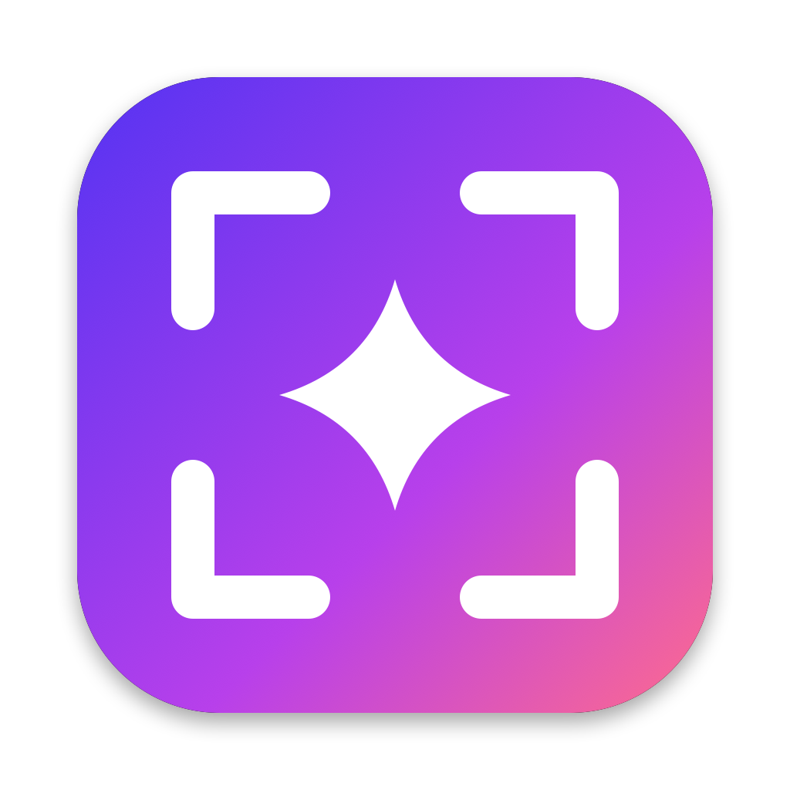
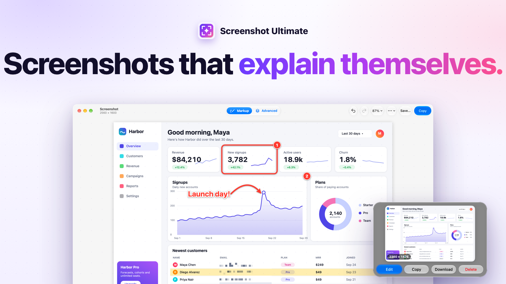

Screenshot & markup for macOS · BestApps LLC

Questions, bug reports or feature requests: email failcondie@gmail.com. We usually reply within two business days.
Screenshot Ultimate lives in the menu bar (the viewfinder icon). Press ⇧⌘1 anywhere, then drag a region, click a window, or press Return for the full screen. A preview card appears at the bottom-right: choose Edit, Delete or Download.
macOS needs to allow screen recording. Open System Settings → Privacy & Security → Screen & System Audio Recording, turn on Screenshot Ultimate, then quit and reopen Screenshot Ultimate.
Another app may already use ⇧⌘1. Pick a different shortcut in the menu bar icon → Settings….
Turn it on or off in the menu bar icon → Settings… → Launch Screenshot Ultimate at login.
Screenshot Ultimate doesn't collect any data and never connects to the internet. Read the privacy policy.